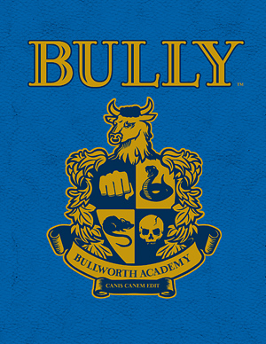

Melhores jogos de Ps2
Gta san andreas

O jogo se passa no estado ficcional de San Andreas, com a história seguindo Carl "CJ" Johnson em sua luta para lidar com guerras de gangues, confrontos com policiais e as relações com sua família e amigos. ... Os jogadores controlam Carl Johnson, com muitas missões envolvendo tiro e direção.
Para comprar o gta san andreas clique aqui
Black

O jogo conta a história de Keller, um soldado que foi preso após desobedecer inúmeras ordens nos últimos 5 dias e deve colaborar com o governo para salvar sua vida de uma prisão perpétua. Enquanto Keller conta a história, o jogador a revive na pele do soldado.
Para comprar o Black clique aqui
Bully
"Bully" narra a história do garoto Jimmy Hopkins em uma escola fictícia dos Estados Unidos. O game mostra o jovem se virando para "sobreviver" entre valentões e professores autoritários, mas também aprontando suas traquinagens para "sacanear as patricinhas" e "salvar os nerds", como diz a sinopse do jogo.
Para comprar o Bully clique aqui
need for espeed 2

Need for Speed Underground 2 é um jogo de corrida 3D que coloca você no eletrizante mundo dos rachas em uma cidade com mais de 200 Km de asfalto. ... Você começará com carros muito lerdos e simples, e apenas quando começar a ganhar corridas e dinheiro, poderá evoluir para uma máquina mais potente.
Para comprar o need for espeed 2 clique aqui